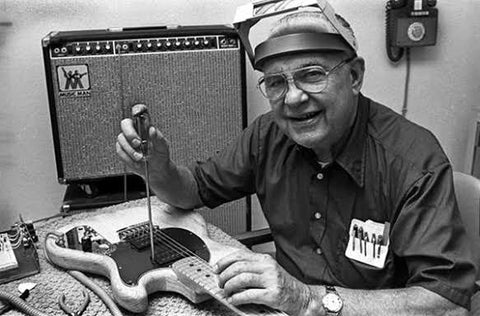
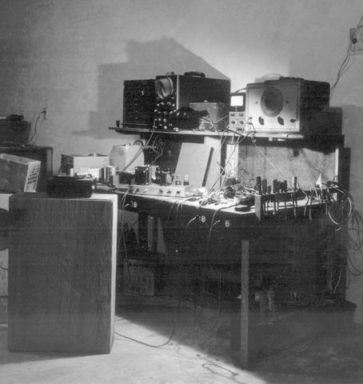
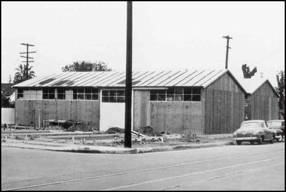
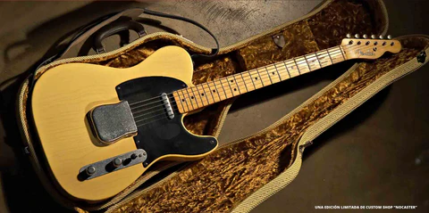

NOSOTROS
Los orígenes de Leo Fender y su legado
Si nos ponemos a pensar en toda la gente que ha contribuido en la música, desde ingenieros, productores, músicos hasta inventores, etc. Todos ellos han aportado su granito de arena para que la música siga evolucionando, no importa si es para bien o para mal (Reguetón), lo importante es que sigue su curso y es un arte que sigue tan vivo y autentico que difícilmente será desplazado por otro. Así que, no hemos dado a la tarea en The Rock Lab, para seguir recordando a este tipo de personajes que han hecho una gran aportación y que muchas veces no se les da el reconocimiento que merecen. En esta ocasión, para todos ustedes hablaremos del legendario "Leo Fender".
1938 Clarence Leonidas "Leo" Fender, se le ocurrió la brillante idea de pedir un préstamo de $600 dólares para abrir una tienda de radios Fender en Fullerton, California. Su obsesión con la electrónica y el amor por la música fue lo que le dio forma al negocio y lo hizo crecer hasta convertirse en una fructífera y reconocida empresa de reparación de televisores y amplificadores. Así mismo, Leo Fender era de esas personas que poseía una curiosidad enorme de como funcionaban las cosas. Le encantaba desarmar equipos electrónicos y hacer modificaciones para mejorarlo. Se pasaba horas y horas en su zona de trabajo lleno de aparatos electrónicos de todo tipo, muy similar a los científicos locos que pasan en las películas.
No fue hasta 1943 cuando se dispara el fenómeno de los salones de baile y los músicos se vieron obligados a buscar cada vez más instrumentos de cuerda más fuertes y de mejor calidad. Con estas tendencias emergentes, Fender se propone desarrollar su propio negocio de instrumentos eléctricos, pero uno de sus problemas de Leo es que no era un guitarrista hábil ni un experto en guitarras. Sin embargo, eso no lo detuvo, tuvo la fortuna de conocer a Clayton Orr "Doc" Kaufman, un músico de Lap-steel con más de 10 años de experiencia vendiendo instrumentos musicales y con él en el equipo tenía más posibilidades de abrir una empresa. Con la popularidad de los instrumentos eléctricos en constante aumento, Fender cambia su enfoque de la reparación a la producción de amplificadores y guitarras Lap Steel de cuerpo solido. Kauffman no le gusto tanto la idea y decidió seguir su camino por su lado en 1946, fue cuando cambio de nombre la compañía de Kauffman & Fender a Fender Electric Instruments Company.
A pesar de todo, Leo siguió sus sueños y siguió con su plan de fabricar instrumentos musicales y gracias a su empeño en 1950 presentaría una guitarra eléctrica de cuerpo solido y pastilla única llamada Squier debutando en el espectáculo de NAMM, en esa ocasión solo fue ridiculizado por sus competidores y lo llamaron "El remo de Leo", sin embargo el nunca se rindió.
Más tarde presentaría un nuevo modelo llamado "Brodcaster", pero en 1951 lo cambiaría por la legendaria e icónica "Telecaster" y el resto es historia, porque a partir de ese momento Fender se volvió una tendencia, un legado, que ha aportado e influenciado a muchos músicos de todo el mundo, un instrumento que se volvió símbolo de cultura y que va recolectando seguidores de generación en generación. ¿Y quién no ha querido una guitarra o bajo Fender?